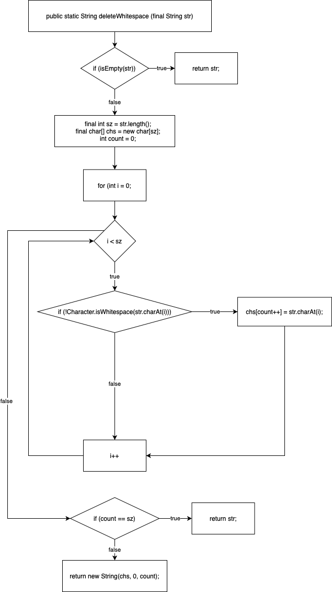
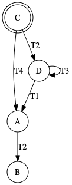
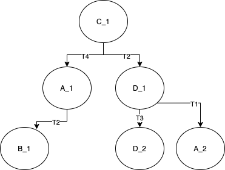

2020 Midterm preparation - Answers
Method under test deleteWhitespace(final String str) from class org.apache.commons.lang3.StringUtils.
Source code of the entire class: https://github.com/apache/commons-lang/tree/e0b474c0d015f89a52c4cf8866fa157dd89e7d1c/src/main/java/org/apache/commons/lang3/StringUtils.java#L1564
Snippet of the method you should test:
/**
* <p>Deletes all whitespaces from a String as defined by
* {@link Character#isWhitespace(char)}.</p>
*
*
* @param str the String to delete whitespace from, may be null
* @return the String without whitespaces, {@code null} if null String input
*/
public static String deleteWhitespace(final String str) {
if (isEmpty(str)) {
return str;
}
final int sz = str.length();
final char[] chs = new char[sz];
int count = 0;
for (int i = 0; i < sz; i++) {
if (!Character.isWhitespace(str.charAt(i))) {
chs[count++] = str.charAt(i);
}
}
if (count == sz) {
return str;
}
return new String(chs, 0, count);
}
Exercise: Domain testing
Variables:
- We see a single input variable,
str(String). - The program outputs a String.
Dependency among variables:
- No dependencies (just a single input variable).
Equivalence and boundary analysis:
Variable str:
- null
- empty
- with a single whitespace
- with many whitespaces
- without whitespace
Boundaries: Boundaries between partitions happen when the string goes from no whitespaces, to a single whitespace, to many whitespaces. These boundaries are already covered by the partitions above.
(Note that others can see cases, such as whitespaces at the beginning or whitespaces at end. We do not see a need for this, given the implementation. Nevertheless, as a black-box tester, these tests are totally valid!)
Strategy: The number of partitions is manageable. Let's write tests to all of them.
Test cases:
- T1 null string = (null string) -> (null)
- T2 empty string = "" -> ""
- T3 no whitespace = "abc" -> "abc"
- T4 single whitespace = "abc " -> "abc"
- T5 multiple whitespaces = " a b c " -> "abc"
Exercise: Control-flow graph

Note: Considering the for(int i = 0) as part of the previous block is also an acceptable solution.
Exercise: Structural testing
The tests we devised in the domain testing already achieve 100% full condition coverage.
From structural testing, we note that the if (count == sz) is not really needed. It seems to be there to avoid the allocation of a new string in the memory (i.e., if the string has no whitespaces, it just returns the same string). While not an explicit requirement, it was already covered by the "no whitespace" partition. To make the tests to capture such implicit requirement, we added an assertion that checks whether the String instance returned by the deleteWhitespace() is the same as the one provided in the input (i.e., assertSame).
Exercise: JUnit code
import org.apache.commons.lang3.StringUtils;
import org.junit.jupiter.params.ParameterizedTest;
import org.junit.jupiter.params.provider.Arguments;
import org.junit.jupiter.params.provider.MethodSource;
import java.util.stream.Stream;
import static org.assertj.core.api.Assertions.assertThat;
// UTest is the name required by WebLab
// otherwise, a more elegant name would be better.
public class UTest {
@ParameterizedTest(name = "{0}")
@MethodSource("generator")
void deleteWhitespace(String description, String str, String expectedResult) {
assertThat(StringUtils.deleteWhitespace(str)).isEqualTo(expectedResult);
}
private static Stream<Arguments> generator() {
Arguments tc1 = Arguments.of("null", null, null);
Arguments tc2 = Arguments.of("empty", "", "");
Arguments tc3 = Arguments.of("no withspace", "abc", "abc");
Arguments tc4 = Arguments.of("single withspace", "abc ", "abc");
Arguments tc5 = Arguments.of("with multiple withspaces", " a b c ", "abc");
return Stream.of(tc1, tc2, tc3, tc4, tc5);
}
@Test
void keepSameReferenceIfNoWhitespaces() {
String abc = "abc";
assertThat(StringUtils.deleteWhitespace(abc)).isSameAs(abc);
}
}
Exercise: Contracts
Pre-conditions: The requirements allow the method to receive a null String. Otherwise, we could formalize string not null as a pre-condition to this method.
Post-conditions: The final string has
length==count. That could be formalized as a post-condition.Class-invariants: No class invariants. This is a static method.
Picking a state machine
The machine begins in state C.
When the machine is at state A and event T2 is invoked, then the machine proceeds to state B.
When the machine is at state C and reaction T2 occurs, then the machine proceeds to state D.
When the machine is at state C and operation T4 is triggered, then the machine enters state A.
When the machine is at state D and event T3 is invoked, then the machine enters state D.
When the machine is in state D and reaction T1 is invoked, then the machine enters state A.
Exercise: Drawing a state machine

Note that we use double lines to represent the initial state. You could have used the UML way of doing it (dark circle pointing to the initial state). We will accept both styles.
Exercise: Transition tree

Exercise: Sneaky paths
Let's draw the transition table:
| T1 | T2 | T3 | T4 | |
|---|---|---|---|---|
| A | - | B | - | - |
| B | - | - | - | - |
| C | - | D | - | A |
| D | A | - | D | - |
Sneaky paths are all the empty cells (11 sneaky paths):
- for state A: T1, T3, T4
- for state B: T1, T2, T3, T4
- for state C: T1, T3
- for state D: T2, T4